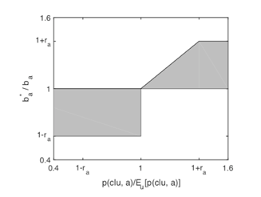
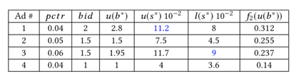
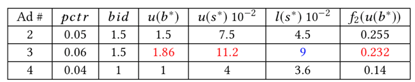
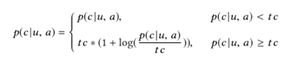

OCPC
OCPX 广告投放策略从 2016 年左右开始兴起，很快就成为了在线广告领域的主流，在这个过程中，阿里的一篇论文 Optimized Cost per Click in Taobao Display Advertising 对 OCPX 的普及起到了关键的作用。本文整理了一下该论文的脉络，谈谈我对 OCPC 的理解。
首先我们要知道， OCPX 模式应用在广告平台进行广告投放和广告展示的环节中，广告平台（SSP）在收到多个广告主（DSP）的竞价请求后，会对竞价广告做一个排序，并选出最合适的广告投放给用户。在这个过程中，广告平台需要兼顾平台利益、广告主利益和用户体验三个因素。广告主获得更多的利润，才会继续你的广告平台，还会拿出更多的预算投放广告；用户体验做好了，用户更愿意使用你的产品，你才能有更多的广告位和更多的用户数据，把广告平台做得更好。所以这三个因素是相辅相成的，OCPC 的设计理念也体现着这一点。
eCPM sorting
这一部分，我们来看看 OCPC 是为了解决什么问题提出来的。
如果让你来对竞价广告做一个排序，你会怎么做？第一想法是，每个广告主不是都会出价嘛，那就按照竞价 bid 来排序呗。想一想这种思路可行嘛？让我们假设计费方式是 CPC ，按照点击收费，也就是用户看到广告并且点击之后才会收费，对于广告平台来说，投放 bid 最高的广告这种策略，没有考虑到用户的点击行为，因此是无法给广告平台带来高收益的。举一个极端的例子，有一个做得无比烂的广告，烂到用户看到就会滑过去，点击率为0，那么按照现在这种策略，该广告就可以肆无忌惮地出高价了，反正没人点击不会扣费，就当免费推广品牌好了。
所以按照 bid 排序不可行，那么现在再考虑点击率，即按照 bid * pctr 进行排序，是不是就合理多了呢？这里 bid * pctr ，就是 eCPM（实际上还需要乘以 1000，因为是千次展示，不过是常数所以一般都忽略了）。这种排序方式称之为 eCPM sorting。
这里我想解释一下 eCPM 这个术语。我看到不同的资料对 eCPM 的定义可以说是众说纷纭，有的说 e 是 effective，有的说是 expected ，有的说 eCPM 表示收益，有的说表示成本。我的理解是，不同使用场景下，eCPM 有不同的涵义。它可以表示广告平台从千次展示中获得的利润（也就是广告主千次展示的成本），也可以表示广告主千次展示的收益。对于前者，用bid * pctr 进行计算，很容易理解，用户点击了才会扣费，所以点击率也是某次广告投放会扣费的概率，再乘以出价，就是广告主花的钱或者平台赚的钱。对于后者，则用 click_value * pctr进行计算，click_value 是点击价值，就是一次广告点击能给广告主带来的收益，再与点击率相乘就是广告主通过广告投放赚的钱了。而显然，eCPM 排序中的 eCPM 涵义为前者。
那么 eCPM 排序有什么不足呢。不妨举一个例子，某天你的购物软件发来一条推送，说某某店铺全场商品1折起，你兴高采烈点进去一看，只有一件1折，其它都是9折，唯一一件1折的商品还被抢完了。你很生气，说不定要拉黑店铺，说不定要投诉卖家，说不定要卸载软件，但是广告平台不管你生不生气，反正你点进去了，它就赚到钱了。我们可以看到，类似这种欺骗性广告，点击率很高，但转化率很低，还很影响用户体验，会损害平台长期利益，但是因为它的点击率高，eCPM 排序会更靠前，更容易获得投放机会。
可以从两个方面分析一下这种广告的危害。一方面，考虑到淘宝平台的特殊性，广告收入是淘宝收入的一部分，但是用户点进去广告后产生的后续行为，即转化，购买，也是会给淘宝带来收益的，因此广告平台在进行广告平台还需要考虑 GMV(Gross Merchandise Volumn) 平台交易总额。之前说过，广告平台需要兼顾平台利益、广告主利益和用户体验，而平台利益实际上又可以分为短期利益和长期利益的，对于淘宝来说，广告收入可以看做是短期利益，GMV 可以看做是长期利益。淘宝不仅要赚广告投放的钱，还要赚广告被点击被转化后商品交易的钱，eCPM 排序显然是做不到的。
另一方面，不考虑淘宝平台的特殊性，事实上大多数广告平台都不需要考虑后续转化行为的收益，那么它们是不是用 eCPM 排序就够了呢？我们可以看到，eCPM 排序的目标是使广告平台通过广告投放得到的直接收益最大化，但是在当前世界的资本游戏中，高级玩家的眼光着落从来都不会着落在直接的短期的收益，想一想那些骗一票就跑的流量电影，想一想从外卖到打车到小黄车一路上的尸骨累累，想一想一直亏损运营、为国为民的高铁基建。嗯，好像扯远了，拉回来，广告收入是广告平台需要考虑的因素，但不是全部，从长远来看，用户的体验、积累的口碑、平台的繁荣，都是广告平台持续发展需要考虑的事情，而 eCPM 排序对以上因素都是无能为力的。于是 OCPX 模式应时而出。
OCPC 综述
我先尝试给 OCPC 做一个综述，然后再从各个环节进行解释。OCPC 就是，广告主给广告 a 定一个预期的出价 ba ，平台将广告投放给不同的用户时，可以在一定范围内调整出价 ba* ，在满足约束条件的前提下（约束条件可以推导出 l (ba* ) < ba* < u (ba* ) ），使得 eCPM 排序最高的广告，它的 f 函数也最大。f 函数是目标函数，和我们想优化的目标正相关。
ROI 约束
我们可以帮广告主做出价优化，但是有个约束条件，就是不能损害广告主的利益，那么如何保证广告主的利益呢？保证 ROI 不降。ROI，Return on Investment，即投资回报率，就是广告主通过打广告赚的钱与打广告花的钱的比率。对于投放给某个用户且被点击的广告的 ROI ，转化率 p(c|u,a) 乘以商品单价 va 就是广告主此次广告投放的收益，出价 ba 就是广告主此次广告投放的成本，于是可得如下公式：
[ roi_{(u, a)} =\frac { p(c|u,a) * v_a } {b_a}]
如果我们不使用任何优化策略，即 ba 保持不变，那么可以计算该广告投放给所有用户的 ROI，如下：
[ roi_a =\frac { v_a * \sum_u n_u * p(c|u,a) } {b_a * \sum_u n_u} = \frac {v_a * E_u [p(c|u,a)]} {b_a}]
其中 nu 是每个用户点击该广告的次数，Eu[p(c|u,a)] 是广告的平均转化率，用总的转化次数
[ \sum_u n_u * p(c|u,a)]
除以总的点击次数
[\sum_u n_u]
为了保证 ROI 不降，对于每一个投放给特定用户的广告做出价调整后，都有
[ roi_{(u, a)} >= roi_a]
代入后可得
[ \frac{b_a^{* }} {b_a} <= \frac{p(c|u,a)}{E_u [p(c|u,a)]}]
由此可以得到 ba 可调整的区域如下：

其中有几点需要注意：
y = 1+fa 和 y = 1-fa 这两条直线是为了保障广告主利益而设置的，试想，广告主出价过高，高到哪怕用户买了这个商品也赚不回广告钱，那广告主会亏到吐血，反之，出价过低，广告主拿不到流量，预算花不出去，也是个问题。
在 x < 1 的区域内，没有 y <= x 的限制。这一点，论文中并没有详细说明，我猜测，可能是因为在低质量流量区域也做 y <= x 的限制的话，过低质量的流量广告主就没法出价（在图上延长一下 y = x 曲线你就能看出来了），这同样存在广告主拿不到流量花不出预算的问题。
目标函数 f
目标函数 f 是我们的优化目标，如果想要优化 GMV ，可以将 f 设置为：
[ f_1(k,b_k^{* }) = pctr_k * pcvr_k * v_k]
如果既考虑 GMV 又考虑平台利益，可以设置为：
[ f_2(k,b_k^{* }) = pctr_k * pcvr_k * v_k + \alpha * pctr_k * b_k^{* }]
总之，要优化什么，f 函数就做相应的更改。
排序算法
好了，准备工作已经完成，接下来我们要从一组广告中找出 N 个（通常 N <= 3）广告，且满足排名第一的广告 eCPM 分值和 f 函数都最大，排名第二的广告 eCPM 分值和 f 函数 都次大，以此类推。
现在我们得到一组广告，对于每个广告，都有预估的点击率 pctr ，出价 bid ，出价上限 u(b* )，由此计算出 eCPM 分值上限：
[ u(s^{* }) = u(b^{* }) * pctr ]
以及 eCPM 分值下限 l (s* )，并计算出 f 函数值。根据 f 函数由大到小排序可得下表：

排序的过程表述如下：
- 第一步，找到最大的 l (sa* ) ，以该表为例为 0.09；
- 第二步，从上到下找到第一个 u (sa* ) 大于 0.09 的广告，即为排名第 1 的广告，记为 ak ，保存其 eCPM 分值上限为 u(sk* )。该广告的最终出价就是其出价上限 u(b* )；
- 第三步，对于剩下的每个广告，更新 u(sa* )，若大于 u(sk* )，则更改为 u(sk* )，b* 也需同比例减小，若 f 函数值和 b* 相关，也需要做相应改变；
- 第四步，重复以上三个步骤，直到筛选出 N 个广告。

解释一下这样做的原因：
对每一个广告都有 eCPM 分值上限和下限，如果广告 A 的 f 函数值特别大，我们自然想将它排在第一，但如果它的 eCPM 分值特别低，低到它的上限，还小于某个广告（不妨称之为广告 B ）的下限，那么无论我们怎么调整这两个广告的出价，也不可能在 eCPM 排序时使得 A 排在 B 前面，所以我们就不能选择 A 作为排名第一的广告。这就是步骤一和二在做的事。
在我们筛选出 f 函数值最大且其 eCPM 分值上限大于所有其它广告的分值下限后，我们需要调整其它广告，使得其它广告的 eCPM 分值不会大于这个广告，这样在做 eCPM 排序时我们才能保证排名第一的广告其 eCPM 分值和 f 函数值都最大。那么怎么调整其它广告呢？很简单，降低它们的 eCPM 分值上限，不超过排名第一的广告就行了。这就是步骤二和三在做的事情。
校准 calibration
校准做的事情就是让 pctr pcvr 更准确。为什么我们需要精准的 pctr pcvr 呢？如果只是一个分类问题，模型只要能对样本有一个好的排序能力（即 AUC）就够了，因为分类问题的目标是分类，模型对于预测结果不需要定量，只需要定序就行了。而广告平台需要做 bid * pctr 的排序，所以需要精准的 pctr，并且 ROI 约束也需要精准的 pcvr ，所以模型不仅要定序，还要定量。
但是预估值 pctr(pcvr) 和 真实值 rctr(rcvr) 是有一个 gap 的。原因可能是多方面的。一方面，因为正样本数过少，在模型训练的时候，一般会对负样本做一个抽样，负样本数变少了，自然预估值会提升。另一方面，因为高斯分布方差是有偏的（详见 为什么高斯分布极大似然的方差会产生偏差 ），偏差大小和样本数有关，而负样本数量远多于正样本数量，所以负样本偏差更大，最终使得预估值更小。其实这两方面原因可以归结为一点，那就是正负样本数量非常不均衡。
所以，我们需要对模型预测的结果做校准。
但是，校准需要知道 pctr 和 rctr 的变化曲线，但是 rctr 是一个统计值，怎么会有变化曲线。或者这么说，现在给你10000个样本，每个样本都可以跑模型计算出一个 pctr，而 rctr 是统计出来的，比如 10000 个样本里有 100 个正样本，那么 rctr 就是 0.01 。好了，现在你有 10000 个 pctr 的值，但是只有一个 rctr，你怎么做校准？
论文给出的解决方式是分组，根据 pctr 的大小分为若干组，但是论文没有给出具体的分组方式。我理解的分组可以像这样：比如 pctr 的取值范围是 [0.01, 0.21] ，可以以 0.01 为间隔分为20个组，并以每个区间的中间值作为该区间的样本的 pctr，然后统计每个区间的正样本占区间样本总数的比例，即为该区间的 rctr 。当然，这种分组并不合理，因为比如很有可能大多数 pctr 都落在 [0.01, 0.05] 区间内，而 [0.05, 0.21] 区间样本太少，结果不可信。个人认为按照样本的数量而不是 pctr 的值进行划分可能是一种更合理的划分方式。
论文对 cvr 的校准非常简单粗暴，但就是有效。论文在比对了 pctr 和 rctr 的变化趋势后，发现在大于某个阈值 tc 时， pctr 与 rctr 的差值指数式增大，所以做了个 log ，具体公式如下：

GAUC
AUC 的计算方式不合理，需要对 AUC 进行分组加权计算，得到的 AUC 称为 GAUC。比如对于用户 A，他比较喜欢点击广告，所以投放给 A 的广告预估点击率比较高；用户 B 则不太喜欢点击，所以投放给 B 的广告预估点击率比较低。现在用户为 A 的正样本和负样本有若干条，用户为 B 的正样本和负样本也有若干条，不妨假设我们的点击率预测模型特别牛逼，把用户为 A 的样本，正样本全部排到了负样本前面，对于用户为 B 的样本亦然，那么分别对于 A 和 B 来说，AUC 都为 1，但是两个人的样本混合到一起后，很有可能用户为 A 的某个负样本分值比用户为 B 的某个正样本分值还大，这种情况下 AUC 自然会小于 1。这个极端的例子是为了说明，把样本按照用户进行分组，单独计算每组样本的 AUC ，再进行加权求和，能更好地反映模型对样本的排序能力。
最后
最后做个总结。我觉得可以从两个方面来讲讲 OCPC 的优势。一方面，正如《计算广告》所说，OCPX 就是优化目标与结算方式不一致的广告投放策略，OCPC 便是如此。通过引入目标函数，广告平台可以测试、调整各种不同的优化策略，以兼顾平台利益、广告主利益和用户体验。
另一方面，从广告主的角度来考虑，OCPC 策略使得广告主对高质量流量提高出价，对低质量流量减少出价，这样虽然转化率提高了，通过打广告赚的钱变多了，但出价也提高了，打广告花的钱也变多了，从 ROI 数值来分析，似乎广告主没有更多获利。不过有很多潜在因素是 ROI 无法衡量的，比如高质量流量更可能产生回头客，精准投放会累积口碑等等，所以 OCPC 对广告主肯定是更有利的。
个人以为，OCPC 是牺牲了一部分广告平台的利益以对目标对象做优化（通常，提高广告主的利益是优化目标之一，所以也可以说广告平台让利于广告主）。因为 f 函数排序最高的广告，其 eCPM 排序不一定最高，选择了该广告进行投放，广告平台就减少了一部分利益。但这个利益是短期利益，减少短期利益，促进平台繁荣，收获长期利益，放长线钓大鱼，才是 OCPC 的精华所在。
淘宝的广告平台比较特殊，后续的购买行为也发生在淘宝上，所以淘宝可以得到十分精准的数据，但是其它广告平台就做不到这一点了，因为转化行为发生在广告主这一侧，而 OCPX 又需要精准的转化数据，这就需要广告主将激活数据回传给平台。但是广告主不会把鸡蛋都放在一个篮子里，他会接入多个 ADX ，在不同的广告平台投放广告，那么用户的激活行为到底属于哪个广告平台呢？这就需要归因 Attribution 了。且听下回分解。